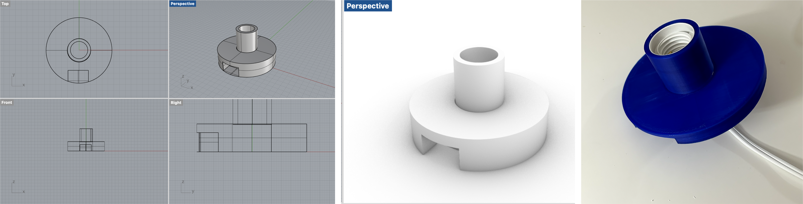
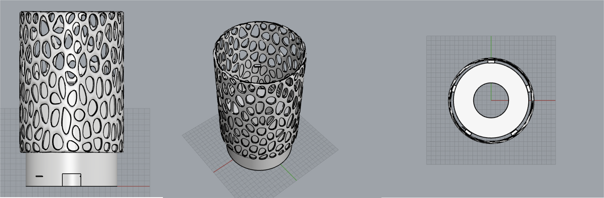

Lamps part 2, And molding and casting part 1!
Assignment 5
Part 1 : Your final lamps 💡

Moodboard
Lamp Innered Redesign


I redesigned the lamp innereds again because the previouse design didn't consider the lightbulb length, so it can't make the lamp standable. So I redesigned it.

Lamp Design & Printing

Final Lamp Deliverable

Part 2 : Molding and casting (pt 1/2)💗
For the mold fabrication, I found a stl model and edited the mesh to be a 3d printed mold design. With the class's tips for mold design, I made a V shape so the later casting easier.
<
I exported the model into Cura. I set the quality as "High Speed", 20% Infill. However, the printed model failed twice and collapse while it was printing. I need advice for the mold design have to reprint it next week!
Appendix
Link to the modified mesh Stl file (stl) by. Soo Hwang Link to the Lamp Innered File (stl) by. Soo Hwang